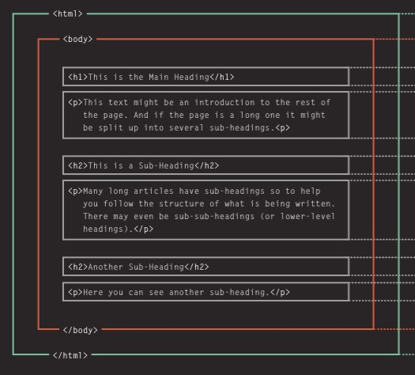
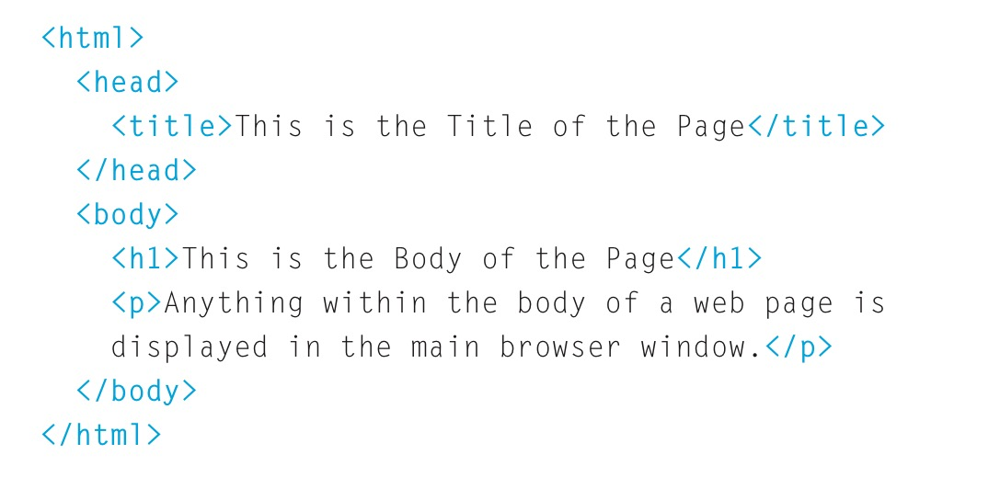

Presented by Josh Medeski @joshmedeski
Thank you for coming! We are so glad you are interested in learning something new. Today is going to be interesting, simple, and FUN!
Here's is what I want you to learn in today's workshop:
We will be covering a lot of material, so please ask for help if you need help with anything or need clarification.
Before we begin, there are some tools and resources we will need.
Hyper Text Markup Language
Just like a newspaper, the web also needs structure (titles, columns, images, etc...).
HTML uses elements to describe the structure of pages
An element is composed of a opening tag, content, and a closing tag.
The character(s) defines the tags purpose.
Attributes add extra information to an element. They always appear with the opening tag.
Every web page is structured with the following elements.
Open Sublime Text and re-create the following content:
When you are done, open the file with Google Chrome
Learn more about the Front-End development: http://www.makersquare.com/part-time